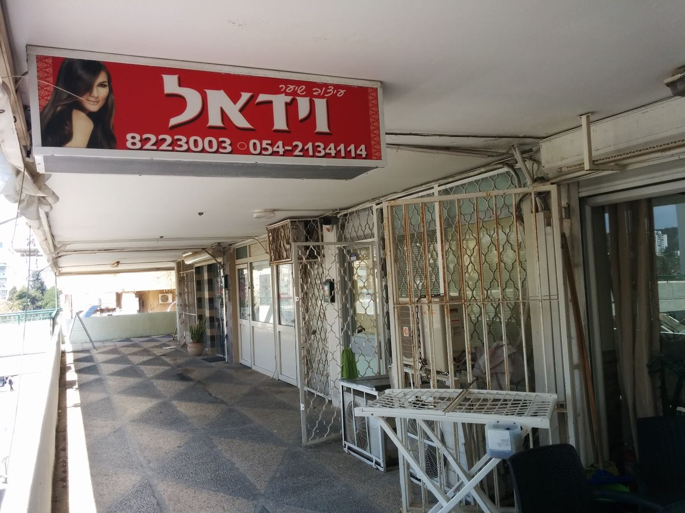
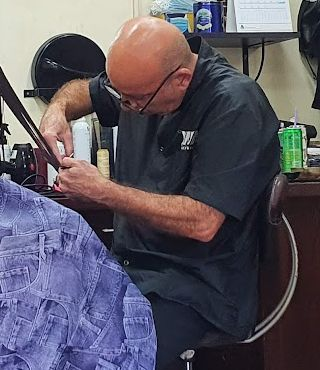
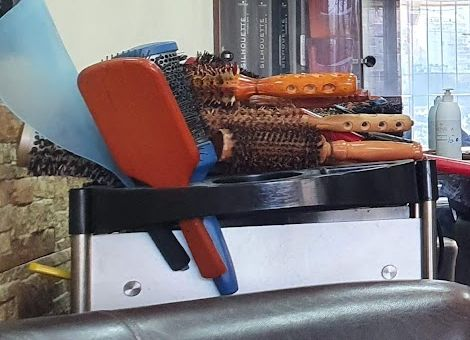
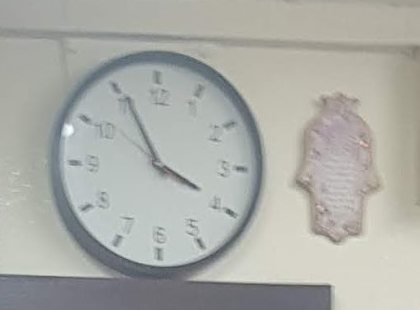
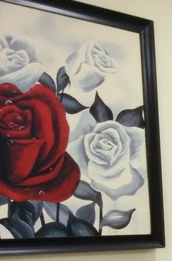

וידאלVidal
עיצוב שיער לגברים, לנשים ולילדיםHair design for men, women and kids

תחת השלט האדוםUnder the red sign
חניתה 64, מאחורי הסופר
בפנים, בין המראותInside, between the mirrors
קיר אבן, ספת עור, וורד אדום על הקיר.A stone wall, a leather sofa and a red rose on the wall.



תספורת לכל המשפחהHaircuts for the whole family
גברים, נשים וילדים, כמו שכתוב על הכרטיס.Men, women and kids, just as the card says.
- גבריםMen
- נשיםWomen
- ילדיםKids
עבודת ידHandwork
--:--עכשיו בחיפהnow in Haifa
4.7
129 ביקורות בגוגל129 Google reviews
המברשות על העגלהBrushes on the trolley
מה כותבים בגוגלWhat people write on Google
4.7/5
מתוך 129 ביקורותfrom 129 reviews

שלחתי את בעלי ספונטני עם צילום של התספורת שאני מבקשת בשבילו. חזר הבייתה בול כמו שקיוויתי. סימפטי קשוב ומחיר הוגן
I sent my husband on the spur of the moment with a photo of the haircut I wanted for him. He came home exactly as I’d hoped. Friendly, attentive and a fair price. (translated from Hebrew)
ספר איכותי ברמה גבוהה ושירות נהדר
A quality barber, top level, and great service. (translated from Hebrew)
כל הביקורות בגוגלAll reviews on Googleהאמת זאת הפעם הראשונה שאני הגעתי אליו במקרה, דרך האינטרנט. ספר ותיק בתחום, מאוד מקצועי, אני מאוד מרוצה מהתספורת, ללא ספק אני אחזור אליו. מעל הכל, אדם אדיב מאוד, מצחיק וכיף לדבר איתו.
Honestly, it was my first time there, I found him by chance online. A veteran in the trade, very professional. I’m very happy with the haircut and I’ll definitely be back. Above all, a very kind man, funny and fun to talk to. (translated from Hebrew)
קובעים בוואטסאפBook on WhatsApp
בוחרים על הכרטיס, וההודעה נכתבת לבד.Choose on the card and the message writes itself.
חניתה 64, חיפה · 054-213411464 Hanita St, Haifa · 054-2134114
שאלות קצרותShort questions
למי המספרה?Who is the salon for?
לגברים, לנשים ולילדים, כמו שכתוב על כרטיס הביקור.Men, women and kids, as the business card says.
איך מוצאים את המקום?How do I find it?
חניתה 64 בחיפה, מאחורי הסופר. מחפשים את השלט האדום.64 Hanita St, Haifa, behind the supermarket. Look for the red sign.
איך קובעים תור?How do I book?
בוואטסאפ או בטלפון לנייד 054-2134114, או בטלפון הקווי 04-8223003.WhatsApp or call the mobile 054-2134114, or the landline 04-8223003.
מתי פתוח?When is it open?
ראשון 8:00–18:30, שני עד חמישי 8:00–20:00, שישי 8:00–16:00. בשבת סגור.Sunday 8:00–18:30, Monday to Thursday 8:00–20:00, Friday 8:00–16:00. Closed on Saturday.